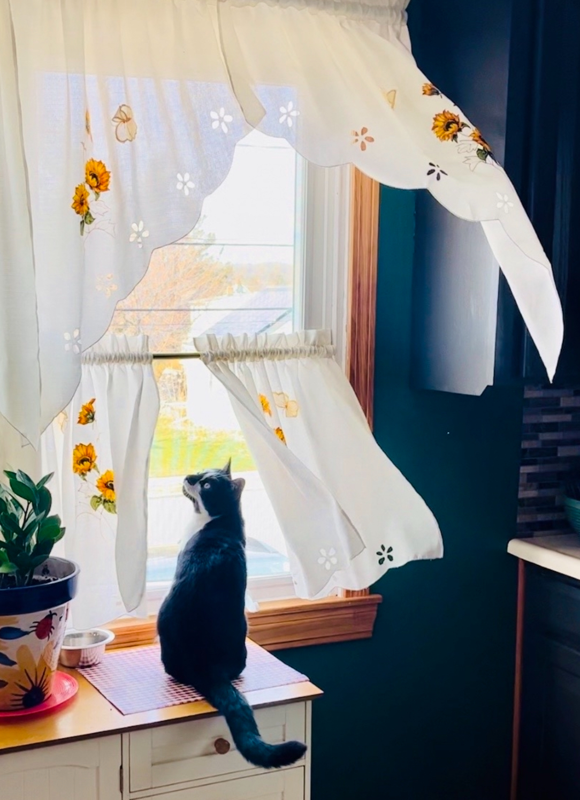

This is Obi! He is only three years old and he has brought us so much joy. He always seems to be up to some sort of trouble whether it be walking through wet paint and tracking it all over the blocked off kitchen or managing to catch a mouse in the basement and bringing it upstairs for us at 5 a.m. Even though he causes trouble, and always attempts to steal your seat the moment you get up, he always makes up for it by simply being adorable and making us laugh. Obi is an indoor cat but he still loves to watch everything the eye can see through the windows. He's also managed to make a few outdoor cat friends that walk by our house that stop and "talk" to Obi for awhile. Obi also enjoy attempting to annoy Bo and succeeding about 20% of the time. Obi has brought us lots of laugh and I'm grateful to have him in my life.
 Back to My Pets